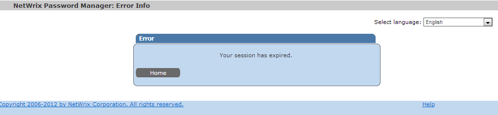

A user receives a Session expired message when trying to reset their password using the
Self-Service portal.

Password Manager is based on IIS and uses internal IIS session variables to handle info. IIS session is limited and may expire. Default timeout is 20 minutes. Such error can also occur when there are issues with cookies, for example they do not correspond to the current session, or refer to another URL, etc.
First of all, make sure that it is not a real session expiration. If a user started the password reset procedure more that 20 minutess ago, then this is an expected message. Also please try clearing up all cookies. If this does not help, check if there is an incorrect redirection in IIS. Please refer to the KB823 for instructions on how to set up redirection for Password Manager.
Password Manager is based on IIS and uses internal IIS session variables to handle info. IIS session is limited and may expire. Default timeout is 20 minutes. Such error can also occur when there are issues with cookies, for example they do not correspond to the current session, or refer to another URL, etc.
First of all, make sure that it is not a real session expiration. If a user started the password reset procedure more that 20 minutess ago, then this is an expected message. Also please try clearing up all cookies. If this does not help, check if there is an incorrect redirection in IIS. Please refer to the KB823 for instructions on how to set up redirection for Password Manager.